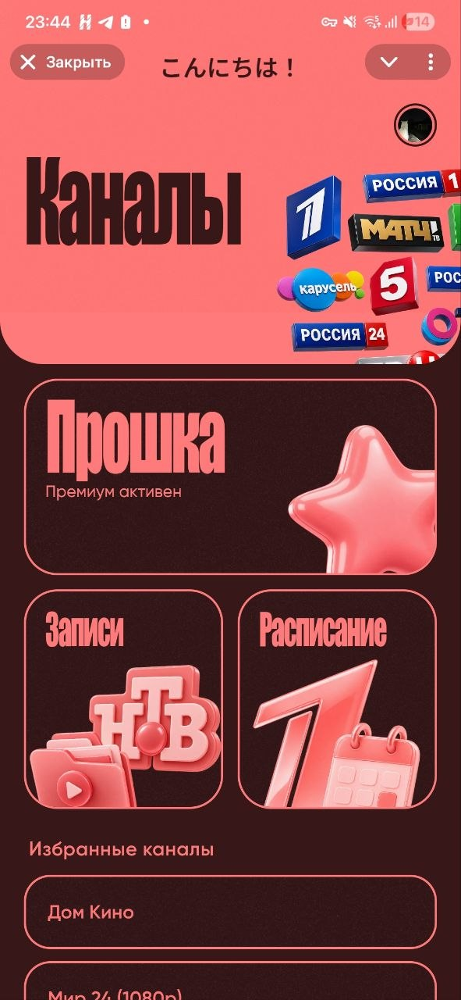
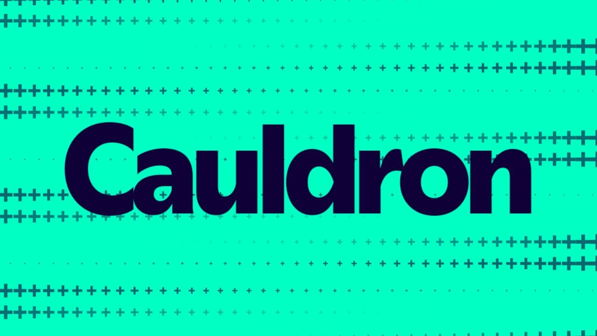
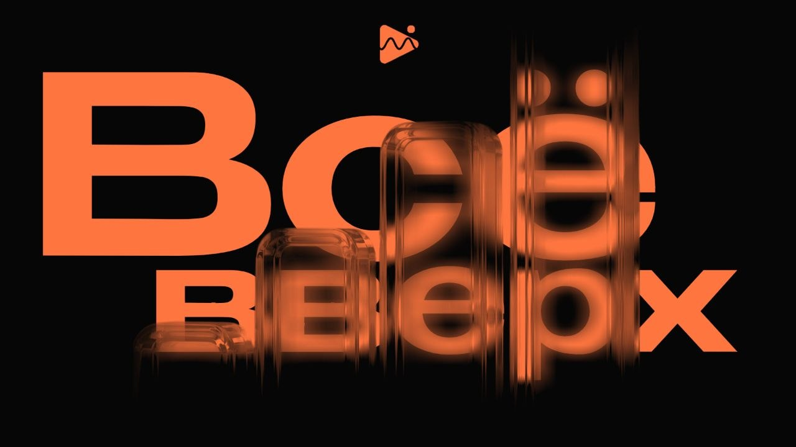

Привет, я Владислав!
Давай расскажу немного о себе
Просто листай внизЯ композитор
Занимаюсь музыкой уже 2 года, делаю клубную музыку, эпическую, а также эмбиентную.
Люблю разную музыку, особенно ту, которой можно проникнуться. Именно поэтому я люблю жанр новостной музыки — он почти всегда умеет удержать зрителя в напряжении. Эмбиент для меня запоминается той самой загадочной пустотой, когда трек не пытается скрыться за инструменталом и дорогими сэмплами, а просто вываливает свою глубину и смысл.
Я дизайнер
Создаю дизайн уже более 5-ти лет в разном виде, от самого раннего и сырого до, как по мне, эстетичного.
все время
Для меня дизайн — это, конечно, не только релиз-постеры, концепты и т.д. Я начинал еще лет в 8 в Picsart, и тогда арты с самим собой казались вершиной графического дизайна. Сейчас мне куда интереснее думать о том, как должны выглядеть и дышать витрины продуктов. Один из самых важных кейсов для меня — Копелла: там я в целом научился нормально работать с версткой и понимать, как сделать приложение так, чтобы его не назвали нейрослопом.



Я плохгламмист
А точнее вайбкодер. Спасибо миру за прошлую связку того, что я дизайнер, и создавать проекты данный факт мне не помешает)
Немного писанины перед тем, как показать вам прекрасные и замечательные сайты, которые я мастерил в разное время своей жизни и карьеры. Я начал программировать до того, как появился вайбкодинг, но тогда это были максимально простые сайты, которые я делал на коленке в учебных целях. У меня не было планов делать большие сайты и приложения — хотя в тот момент я уже мечтал об этом. При этом я могу ругаться на сайты, которые реально сделаны очень ужасно, дешево и, знаете, можно даже сказать нейрослопово. Я такого стараюсь не допустить, и слава богу, ахах.

Мои навыки
python, nodejs, HTML5, javascript, design
web-design
:music
genres electronic, news, dramatic, countdown, ambient